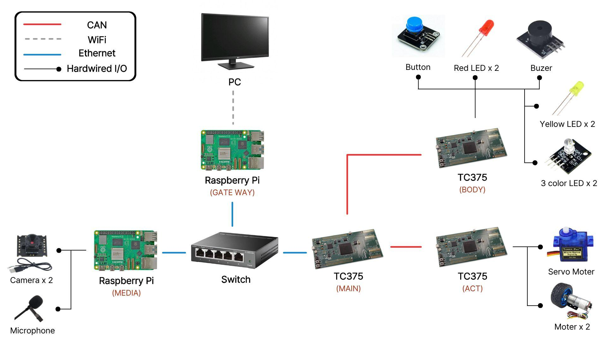

| A | B | C | D | E | F | G | H | I | J | K | L | M | N | O | |
|---|---|---|---|---|---|---|---|---|---|---|---|---|---|---|---|
1 | |||||||||||||||
2 | 시스템 요구사항 | 시스템 아키텍처 | |||||||||||||
3 | 요구사항 ID | 분류 | 시스템 요구사항 | 상세 설명 | 관련 UR | 관련 FR | 관련 인터페이스 | 우선순위 | 검증 방법 | 수용 기준 |  | ||||
4 | SYS-001 | 시스템 구조 | 시스템은 관제 PC, Gateway 또는 MAIN ECU, ACT ECU, BODY ECU로 구성되어야 한다. | 관제 PC는 원격 운전자의 입력과 상태 표시를 담당하고, Gateway 또는 MAIN ECU는 상위 명령을 차량 내부 제어 메시지로 변환하며, ACT ECU와 BODY ECU는 각각 구동/조향/제동 및 차체 전장 기능을 수행해야 한다. | UR-001, UR-005 | FR-001, FR-101, FR-102 | 전체 시스템 구조 | Must | 설계 문서 검토 | 시스템 구성요소와 각 ECU 역할이 문서에 명확히 정의되어야 한다. | |||||
5 | SYS-002 | 시스템 구조 | 시스템은 RC카 기반 원격 차량 호출·반납 제어 PoC로 동작해야 한다. | 실제 차량 상용 주행이 아닌 교육용 PoC로서, 원격 명령이 차량 내부 통신망을 거쳐 RC카의 구동, 조향, 제동, 등화 동작으로 이어지는 구조를 검증해야 한다. | UR-007, UR-008, UR-009, UR-091, UR-092 | FR-091, FR-092, FR-093 | 시연 시나리오 | Must | 통합 시연 | RC카가 원격 입력에 따라 이동, 조향, 정지, 등화 동작을 수행해야 한다. | |||||
6 | SYS-003 | 시스템 구조 | 시스템은 원격 호출, 원격 이동, 반납 요청, 원격 회수·주차 흐름을 지원해야 한다. | 사용자 위치로 차량을 이동시키는 호출 시나리오와 이용 후 차량을 회수하는 반납 시나리오를 하나의 서비스 흐름으로 설명하고 시연할 수 있어야 한다. | UR-091, UR-092 | FR-091, FR-092 | 시연 시나리오 | Must | 시나리오 검토 및 시연 | 호출 → 이동 → 정지 → 회수 흐름이 발표 및 데모에서 확인되어야 한다. | |||||
7 | SYS-004 | 시스템 구조 | 시스템은 원격 제어 명령과 차량 상태 피드백을 양방향으로 처리해야 한다. | 관제 PC에서 차량으로 제어 명령을 송신하고, 차량은 속도, 기어, 조향, 등화, 오류 상태를 관제 PC 또는 MAIN ECU로 피드백해야 한다. | UR-012, UR-037 | FR-036, FR-037, FR-102 | CAN 상태피드백 / Ethernet 상태 데이터 | Must | CAN 로그 및 관제 화면 확인 | 명령 입력 후 차량 상태 변화가 피드백 데이터로 확인되어야 한다. | |||||
8 | SYS-005 | 시스템 모드 | 시스템은 원격 제어 가능 상태와 비제어 상태를 구분해야 한다. | 차량 상태는 원격 제어 가능, 사용자 운행, 회수 대기, 원격 제어 중, 오류 상태 등으로 구분되어야 하며, 원격 제어 가능 상태에서만 주행 명령을 허용해야 한다. | UR-005, UR-006 | FR-013, FR-021, FR-022, FR-023 | 제어 모드 상태 | Must | 모드별 테스트 | 비제어 상태에서는 구동 명령이 차량 동작으로 이어지지 않아야 한다. | |||||
9 | SYS-006 | 시스템 모드 | 시스템은 제어 준비 또는 시동 ON 상태에서만 주행 제어를 허용해야 한다. | 시동 OFF 또는 Standby 상태에서는 가속, 후진, 조향 등 원격 주행 명령을 제한하고 안전한 정지 상태를 유지해야 한다. | UR-006 | FR-023, FR-103 | control_mode | Must | 모드 전환 테스트 | Standby 상태에서 가속 명령을 보내도 모터가 동작하지 않아야 한다. | |||||
10 | SYS-007 | 관제 입력 | 시스템은 관제 PC의 키보드 입력을 차량 제어 명령으로 변환해야 한다. | 전진, 후진, 브레이크, 좌측 조향, 우측 조향, 기어 변경, 전조등, 방향지시등, 비상등, 경적, 긴급 정지 입력을 차량 제어 메시지로 변환해야 한다. | UR-007~UR-017 | FR-024, FR-025, FR-028, FR-031, FR-032, FR-040~FR-046 | PC 입력 / Gateway 명령 | Must | 관제 프로그램 테스트 | 각 키 입력에 대응되는 제어 메시지가 생성되어야 한다. | |||||
11 | SYS-008 | 구동 제어 | 시스템은 기어 상태와 가속 명령을 함께 판단하여 차량의 구동 방향을 결정해야 한다. | D 기어와 가속 명령이 함께 입력되면 전진, R 기어와 가속 명령이 함께 입력되면 후진해야 하며, P/N 상태에서는 구동하지 않아야 한다. | UR-007, UR-008, UR-011 | FR-024, FR-025, FR-028, FR-029 | ACT 제어명령 0x100 | Must | 모터 동작 테스트 | D에서는 전진, R에서는 후진, P/N에서는 구동 정지가 확인되어야 한다. | |||||
12 | SYS-009 | 제동 제어 | 시스템은 브레이크 명령을 수신하면 가속 명령보다 우선하여 차량을 정지시켜야 한다. | 브레이크 입력이 활성화되면 현재 기어와 가속 상태와 관계없이 모터 구동을 중단하고 제동 또는 정지 상태로 전환해야 한다. | UR-010, UR-016 | FR-010, FR-071, FR-103 | ACT 제어명령 0x100 | Must | 제동 우선순위 테스트 | 가속 중 브레이크 입력 시 차량이 즉시 정지해야 한다. | |||||
13 | SYS-010 | 조향 제어 | 시스템은 좌측/우측 조향 명령에 따라 서보 모터를 제어해야 한다. | LEFT 명령은 좌측 조향, RIGHT 명령은 우측 조향으로 변환되어야 하며, NULL 또는 조향 미입력 상태에서는 중앙 복귀 동작을 수행해야 한다. | UR-009 | FR-031, FR-032, FR-034 | ACT 제어명령 0x100 | Must | 서보 동작 테스트 | 좌/우 조향 입력 시 서보가 해당 방향으로 움직이고 미입력 시 중앙으로 복귀해야 한다. | |||||
14 | SYS-011 | 등화 제어 | 시스템은 BODY ECU를 통해 전조등, 방향지시등, 브레이크등, 비상등을 제어해야 한다. | BODY ECU는 수신한 차체 제어 명령에 따라 전조등 ON/OFF, 좌/우 방향지시등, 비상등, 브레이크등을 출력해야 한다. | UR-013, UR-014, UR-015, UR-016 | FR-040, FR-041, FR-042, FR-043 | BODY 제어명령 0x110 | Must | BODY 출력 테스트 | 각 등화 명령에 따라 해당 LED가 정상 동작해야 한다. | |||||
15 | SYS-012 | 경적 제어 | 시스템은 원격 경적 명령을 BODY ECU 출력으로 변환해야 한다. | 관제 PC의 경적 입력은 BODY ECU로 전달되어 부저 또는 경적 출력으로 동작해야 한다. | UR-017 | FR-046 | BODY 제어명령 0x110 | Should | 부저 출력 테스트 | 경적 입력 시 부저 또는 경적 출력이 발생해야 한다. | |||||
16 | SYS-013 | 장애물 경고 | 시스템은 후방 장애물 거리 또는 충돌 방지 경고 상태를 처리할 수 있어야 한다. | 후방 거리 센서 또는 충돌 방지 경고 명령을 기반으로 경고등 또는 경고음을 출력하고, 위험 상태를 차량 상태로 표시할 수 있어야 한다. | UR-018, UR-019 | FR-054, FR-055 | BODY 제어명령 0x110 | Should | 센서/경고 테스트 | 임계 거리 이하 또는 경고 명령 입력 시 경고 출력이 발생해야 한다. | |||||
17 | SYS-014 | CAN 통신 | 시스템은 차량 내부 ECU 간 통신에 Classical CAN 500 kbps를 사용해야 한다. | MAIN, ACT, BODY ECU 간 제어 명령, 상태 피드백, 이벤트, 진단 메시지는 표준 ID 기반 Classical CAN 500 kbps로 송수신되어야 한다. | UR-037, UR-062 | FR-062, FR-108 | CAN Bus 1 / CAN Bus 2 | Must | PCAN-View 확인 | PCAN-View에서 정의된 CAN ID와 데이터 필드가 확인되어야 한다. | |||||
18 | SYS-015 | CAN 통신 | MAIN → ACT 제어명령은 CAN ID 0x100, DLC 6 형식으로 송신되어야 한다. | ACT 제어명령은 accel_key, steering_key, brake_key, gear_state, control_mode, safety_override 신호를 포함해야 한다. | UR-007~UR-011 | FR-024, FR-025, FR-028, FR-031, FR-032 | 0x100 / DLC 6 | Must | CAN 송신 로그 확인 | 0x100 프레임의 Byte0~Byte5가 정의된 신호와 일치해야 한다. | |||||
19 | SYS-016 | CAN 통신 | ACT → MAIN 상태피드백은 CAN ID 0x200, DLC 5 형식으로 송신되어야 한다. | ACT 상태피드백은 speed_kmh_x100, gear_state, steering_state, steering_angle 정보를 포함해야 한다. | UR-012, UR-037 | FR-035, FR-036, FR-037 | 0x200 / DLC 5 | Must | CAN 수신 로그 확인 | 0x200 프레임에서 속도, 기어, 조향 상태, 조향각이 확인되어야 한다. | |||||
20 | SYS-017 | CAN 통신 | MAIN → BODY 제어명령은 CAN ID 0x110, DLC 6 형식으로 송신되어야 한다. | BODY 제어명령은 전조등, 방향지시등, 브레이크등, 경적, 충돌 방지 경고, control_mode 신호를 포함해야 한다. | UR-013~UR-019 | FR-040~FR-046, FR-054, FR-055 | 0x110 / DLC 6 | Must | CAN 송신 및 BODY 출력 확인 | 0x110 프레임 수신 시 BODY 출력이 정의된 Byte 값과 일치해야 한다. | |||||
21 | SYS-018 | CAN 통신 | 충돌 발생 이벤트는 BODY → MAIN 이벤트 메시지로 송신되어야 한다. | 충돌 스위치 또는 충돌 조건이 발생하면 BODY ECU는 충돌 발생 여부와 발생 시각 정보를 포함한 이벤트 프레임을 송신해야 한다. | UR-057, UR-058 | FR-082, FR-084 | 0x210 / DLC 5 | Must | 충돌 이벤트 테스트 | 충돌 입력 발생 시 0x210 이벤트 프레임이 송신되어야 한다. | |||||
22 | SYS-019 | CAN 통신 | BODY ECU는 heartbeat 메시지를 주기적으로 송신해야 한다. | BODY ECU는 alive_counter를 포함한 heartbeat 프레임을 200 ms 주기로 송신하여 MAIN ECU가 BODY ECU의 생존 여부를 판단할 수 있게 해야 한다. | UR-004, UR-060 | FR-070, FR-103 | 0x310 / DLC 1 | Should | CAN 주기 측정 | 0x310 메시지가 200 ms 주기로 수신되어야 한다. | |||||
23 | SYS-020 | CAN 통신 | 시스템은 허용된 CAN ID만 처리해야 한다. | ACT ECU와 BODY ECU는 정의된 CAN ID만 수신 처리하고, 허용되지 않은 CAN ID는 제어 로직에 반영하지 않아야 한다. | UR-060 | FR-067, FR-068 | CAN ID Filter | Must | 비허용 ID 주입 테스트 | 비허용 ID 입력 시 차량 동작이 발생하지 않아야 한다. | |||||
24 | SYS-021 | CAN 통신 | 시스템은 CAN 수신 프레임의 DLC와 데이터 범위를 검증해야 한다. | 수신 메시지의 CAN ID, DLC, Byte별 값 범위를 검사하고, 정의되지 않은 값은 무시하거나 오류로 처리해야 한다. | UR-060 | FR-063, FR-066, FR-068 | CAN ID / DLC / Data Field | Must | 비정상 프레임 테스트 | 잘못된 DLC 또는 범위 외 데이터 입력 시 차량 제어가 수행되지 않아야 한다. | |||||
25 | SYS-022 | 통신 주기 | ACT 제어명령은 20 ms 주기로 송신되어야 한다. | 구동 및 조향 명령이 안정적으로 유지되도록 MAIN 또는 테스트 프로그램은 20 ms 주기로 ACT 제어 프레임을 송신해야 한다. | UR-007~UR-011 | FR-024, FR-025, FR-031, FR-032 | 0x100 Cycle 20 ms | Must | CAN 주기 측정 | 0x100 프레임 주기가 20 ms 수준으로 유지되어야 한다. | |||||
26 | SYS-023 | 통신 주기 | ACT 상태피드백은 50 ms 주기로 송신되어야 한다. | ACT ECU는 속도, 기어, 조향 상태, 조향각 정보를 50 ms 주기로 송신해야 한다. | UR-012, UR-037 | FR-035, FR-036, FR-037 | 0x200 Cycle 50 ms | Must | CAN 주기 측정 | 0x200 프레임 주기가 50 ms 수준으로 유지되어야 한다. | |||||
27 | SYS-024 | 통신 주기 | BODY 제어명령은 20 ms 주기로 갱신 가능해야 한다. | 등화, 경적, 경고 출력 상태가 끊기지 않도록 MAIN 또는 테스트 프로그램은 BODY 제어명령을 20 ms 주기로 갱신할 수 있어야 한다. | UR-013~UR-017 | FR-040~FR-046 | 0x110 Cycle 20 ms | Should | CAN 주기 측정 | BODY 제어 상태가 명령 주기 동안 안정적으로 유지되어야 한다. | |||||
28 | SYS-025 | Ethernet 통신 | 시스템은 관제 PC와 차량 Gateway 간 Ethernet 또는 Wi-Fi 기반 통신 구조를 제공해야 한다. | 관제 PC의 원격 명령, 차량 상태, 진단 요청, 영상/서비스 데이터는 상위 네트워크 통신 구조를 통해 교환될 수 있어야 한다. | UR-004, UR-057 | FR-057, FR-058 | UDP/TCP Port 규약 | Should | Wireshark 확인 | Wireshark에서 제어, 상태, 진단 패킷이 구분되어야 한다. | |||||
29 | SYS-026 | Ethernet-CAN 변환 | 시스템은 상위 원격 제어 명령을 차량 내부 CAN 메시지로 변환해야 한다. | PC 또는 Gateway에서 수신한 전진, 후진, 조향, 브레이크, 기어, 등화 명령은 해당 ECU의 CAN ID와 데이터 필드로 변환되어야 한다. | UR-007~UR-017 | FR-060, FR-101 | Ethernet-CAN Gateway | Must | CAN 변환 테스트 | 상위 명령 입력 시 대응되는 CAN 프레임이 발생해야 한다. | |||||
30 | SYS-027 | CAN-Ethernet 변환 | 시스템은 차량 내부 CAN 상태피드백을 관제 PC 표시용 상태 데이터로 변환해야 한다. | ACT/BODY ECU에서 수신한 상태 프레임은 관제 PC가 이해할 수 있는 기어, 속도, 조향, 등화, 오류 상태 데이터로 변환되어야 한다. | UR-012, UR-037 | FR-061, FR-102 | CAN-Ethernet Gateway | Must | 상태 표시 테스트 | CAN 상태 변화가 관제 화면 또는 로그에 반영되어야 한다. | |||||
31 | SYS-028 | 진단 통신 | ACT ECU는 UDS 진단 요청을 CAN ID 0x700, DLC 8 Single Frame으로 수신해야 한다. | Tester 또는 MAIN ECU는 ACT ECU에 UDS 요청을 0x700으로 송신하고, ACT ECU는 Single Frame 형식의 요청만 처리해야 한다. | UR-002, UR-003 | FR-014, FR-015, FR-016 | UDS Req 0x700 | Must | UDS Python 테스트 | 정상 UDS 요청 수신 시 ACT ECU가 요청을 처리해야 한다. | |||||
32 | SYS-029 | 진단 통신 | ACT ECU는 UDS 진단 응답을 CAN ID 0x708, DLC 8 Single Frame으로 송신해야 한다. | ACT ECU는 지원 서비스에 대해 긍정 응답 또는 부정 응답을 0x708로 송신해야 하며, 응답 페이로드는 Single Frame 범위 내에서 구성되어야 한다. | UR-002, UR-003 | FR-014, FR-015, FR-020 | UDS Resp 0x708 | Must | UDS 응답 확인 | Tester가 0x708 응답 프레임을 수신해야 한다. | |||||
33 | SYS-030 | 진단 통신 | 시스템은 UDS DiagnosticSessionControl 서비스를 지원해야 한다. | 기본 세션과 확장 세션을 구분하고, 진단 루틴 실행이 필요한 경우 확장 세션에서만 허용해야 한다. | UR-002, UR-003 | FR-014, FR-015 | UDS SID 0x10 | Should | UDS 서비스 테스트 | 0x10 요청에 대해 정상 세션 응답이 반환되어야 한다. | |||||
34 | SYS-031 | 진단 통신 | 시스템은 UDS ReadDataByIdentifier 서비스를 통해 주요 상태를 조회할 수 있어야 한다. | ECU 식별정보, 속도, 조향각 등 주요 데이터는 DID 기반으로 조회 가능해야 한다. | UR-002, UR-003, UR-012 | FR-014, FR-015, FR-016 | UDS SID 0x22 | Should | UDS DID 조회 테스트 | DID 요청 시 정의된 데이터가 응답되어야 한다. | |||||
35 | SYS-032 | 진단 통신 | 시스템은 UDS DTC 조회 및 삭제 기능을 제공해야 한다. | 엔코더 신호 없음, 조향 명령-실측 불일치, 센서 오류 등 주요 고장 조건을 DTC로 관리하고, 조회 및 삭제할 수 있어야 한다. | UR-002, UR-003, UR-060 | FR-015, FR-020, FR-088 | UDS SID 0x19 / 0x14 | Should | DTC 발생/삭제 테스트 | 고장 조건 발생 시 DTC가 조회되고 삭제 요청 시 초기화되어야 한다. | |||||
36 | SYS-033 | 진단 통신 | 시스템은 진단 루틴을 통해 모터와 조향 출력 상태를 확인할 수 있어야 한다. | RoutineControl을 통해 모터 테스트와 서보 테스트를 수행하고, 결과를 응답으로 반환할 수 있어야 한다. | UR-002, UR-003 | FR-014, FR-015 | UDS SID 0x31 | Should | RoutineControl 테스트 | 모터/서보 테스트 요청 후 성공 또는 실패 결과가 응답되어야 한다. | |||||
37 | SYS-034 | 상태 피드백 | 시스템은 엔코더 입력을 기반으로 차량 속도를 계산해야 한다. | ACT ECU는 엔코더 펄스를 기반으로 차량 속도를 km/h x100 단위로 계산하고 상태피드백 메시지에 포함해야 한다. | UR-012 | FR-035 | 0x200 Byte0~1 | Should | 엔코더 테스트 | 모터 회전 시 속도 값이 0보다 크게 갱신되어야 한다. | |||||
38 | SYS-035 | 상태 피드백 | 시스템은 ADC 입력을 기반으로 현재 조향각을 계산해야 한다. | ACT ECU는 가변저항 ADC 값을 조향각으로 변환하고 상태피드백 메시지에 포함해야 한다. | UR-009, UR-012 | FR-031, FR-032, FR-037 | 0x200 Byte4 | Should | ADC 값 확인 | 좌/우 조향 시 조향각 값이 변화해야 한다. | |||||
39 | SYS-036 | 상태 피드백 | 시스템은 차량의 주요 상태를 관제 PC에서 확인할 수 있게 해야 한다. | 관제 PC는 기어, 속도, 조향 상태, 브레이크 상태, 등화 상태, 진단 상태, 통신 상태를 표시할 수 있어야 한다. | UR-012, UR-037, UR-059 | FR-037, FR-039, FR-104, FR-105 | 관제 UI / 상태 데이터 | Must | 관제 화면 확인 | 주요 차량 상태가 화면 또는 콘솔 로그에 표시되어야 한다. | |||||
40 | SYS-037 | Fail-Safe | ACT ECU는 제어명령 수신이 일정 시간 이상 중단되면 안전 상태로 진입해야 한다. | ACT ECU는 MAIN → ACT 제어명령이 timeout 기준 이상 수신되지 않으면 모터를 정지하고 조향을 중앙 복귀 또는 안전 상태로 전환해야 한다. | UR-004, UR-060 | FR-069, FR-097, FR-103 | ACT command timeout | Must | 통신 중단 테스트 | 제어명령 송신 중단 시 차량이 정지해야 한다. | |||||
41 | SYS-038 | Fail-Safe | 시스템은 safety_override 신호가 활성화되면 즉시 구동을 차단해야 한다. | safety_override=Force Stop 상태에서는 가속, 후진, 조향 등 일반 주행 명령보다 강제 정지를 우선 처리해야 한다. | UR-010, UR-060 | FR-071, FR-103 | 0x100 Byte5 | Must | 긴급 정지 테스트 | safety_override 입력 시 차량이 즉시 정지해야 한다. | |||||
42 | SYS-039 | Fail-Safe | 시스템은 비정상 제어 모드에서 주행 명령을 수행하지 않아야 한다. | control_mode가 Remote Drive가 아닌 경우 ACT ECU는 구동 명령을 차단하고 안전 상태를 유지해야 한다. | UR-005, UR-006 | FR-023, FR-103 | 0x100 Byte4 | Must | 제어모드 테스트 | Standby 또는 Diagnostic 모드에서 가속 명령이 무시되어야 한다. | |||||
43 | SYS-040 | Fail-Safe | 시스템은 통신 단절 상황에서 관제 화면에 오류 상태를 표시해야 한다. | Heartbeat 미수신, CAN timeout, Ethernet 연결 끊김 등 통신 이상이 발생하면 오류 상태를 표시하고 차량을 안전 상태로 전환해야 한다. | UR-004, UR-060 | FR-070, FR-097, FR-103 | Heartbeat / Timeout | Must | 통신 단절 테스트 | 통신 단절 시 오류 표시와 차량 정지가 확인되어야 한다. | |||||
44 | SYS-041 | Fail-Safe | 시스템은 비인가 또는 비정상 명령을 차량 동작에 반영하지 않아야 한다. | 허용되지 않은 CAN ID, 범위 외 데이터, 잘못된 DLC, 정의되지 않은 제어값은 폐기하고 오류 로그로 기록할 수 있어야 한다. | UR-060 | FR-067, FR-068, FR-098 | CAN ID Filter / Data Validation | Must | 비정상 명령 주입 테스트 | 비정상 명령 입력 시 차량 상태가 변하지 않아야 한다. | |||||
45 | SYS-042 | Fail-Safe | 시스템은 충돌 발생 시 차량을 정지시키고 이벤트를 기록해야 한다. | 충돌 스위치 또는 충돌 이벤트가 발생하면 주행 명령을 차단하고, 충돌 발생 여부, 발생 시각, 당시 차량 상태를 기록해야 한다. | UR-057, UR-058 | FR-082, FR-084, FR-085 | 0x210 / 로그 데이터 | Must | 충돌 이벤트 테스트 | 충돌 입력 시 차량 정지와 이벤트 로그가 확인되어야 한다. | |||||
46 | SYS-043 | 우선순위 | 시스템은 긴급 정지 및 제동 관련 메시지를 일반 주행 명령보다 우선 처리해야 한다. | 메시지 폭주 또는 반복 제어 상황에서도 긴급 정지, 브레이크, 충돌 이벤트는 일반 가속/조향 명령보다 먼저 처리되어야 한다. | UR-010, UR-060 | FR-071, FR-072 | Starvation Test | Must | Starvation Test | 반복 명령 중에도 긴급 정지가 지연 없이 처리되어야 한다. | |||||
47 | SYS-044 | 라우팅 | 시스템은 수신 프레임을 기능별 제어 모듈로 분배해야 한다. | CAN ID 또는 PDU 유형을 기준으로 구동, 조향, 등화, 진단, 상태, 서비스 처리 모듈을 구분하여 호출해야 한다. | UR-037, UR-060 | FR-064, FR-065, FR-066 | Signal/PDU/Frame Based Routing | Must | 라우팅 테스트 | CAN ID 또는 메시지 유형에 따라 올바른 처리 모듈이 호출되어야 한다. | |||||
48 | SYS-045 | 네트워크 분리 | 시스템은 제어 데이터, 진단 데이터, 영상/서비스 데이터를 논리적으로 구분해야 한다. | 제어 명령, 상태 피드백, 진단 요청, 영상 스트림, 블랙박스 서비스 데이터는 포트, CAN ID, 서비스 ID 또는 VLAN 기준으로 구분되어야 한다. | UR-004, UR-037 | FR-074, FR-075, FR-109 | 포트 규약 / VLAN / CAN ID | Should | 설계 문서 및 캡처 확인 | 데이터 유형별 식별자 또는 경로가 구분되어야 한다. | |||||
49 | SYS-046 | 통신 검증 | 시스템은 PCAN-View를 통해 CAN 프레임을 검증할 수 있어야 한다. | 구동, 조향, 제동, 등화, 상태피드백, 진단 메시지는 PCAN-View에서 CAN ID, DLC, Data Field로 확인 가능해야 한다. | UR-037 | FR-094, FR-108 | PCAN-View | Must | PCAN-View 캡처 | 시연 중 주요 CAN 메시지가 캡처되어야 한다. | |||||
50 | SYS-047 | 통신 검증 | 시스템은 Wireshark를 통해 Ethernet 기반 패킷을 검증할 수 있어야 한다. | 제어 명령, 상태 데이터, 진단 요청/응답, SOME/IP-like 서비스 요청은 Wireshark에서 구분 가능한 패킷으로 확인 가능해야 한다. | UR-004, UR-037 | FR-058, FR-094, FR-107 | Wireshark | Should | Wireshark 캡처 | 시연 또는 테스트 중 주요 Ethernet 패킷이 캡처되어야 한다. | |||||
51 | SYS-048 | 영상 전송 | 시스템은 차량 전방 또는 후방 영상을 관제 PC로 전송할 수 있어야 한다. | 차량에 장착된 카메라 영상은 RTP/UDP, RTSP, HTTP 등 실시간성 있는 방식으로 관제 PC에 전달될 수 있어야 한다. | UR-020, UR-021, UR-022 | FR-047, FR-048, FR-049 | 영상 스트리밍 포트 | Could | 영상 수신 테스트 | 관제 PC에서 전방 또는 후방 영상이 표시되어야 한다. | |||||
52 | SYS-049 | 영상 상태 | 시스템은 영상 수신 상태를 감시할 수 있어야 한다. | 영상 프레임 지연, 끊김, 미수신 상태를 감지하여 관제 화면 또는 로그에 표시할 수 있어야 한다. | UR-023 | FR-050 | 영상 상태 데이터 | Could | 영상 끊김 테스트 | 영상 미수신 시 경고 상태가 표시되어야 한다. | |||||
53 | SYS-050 | 음성 전송 | 시스템은 차량 주변 음성을 관제 PC로 전송할 수 있어야 한다. | 차량 마이크 입력은 실시간 오디오 데이터로 관제 PC에 전달될 수 있어야 하며, 마이크 연결 상태를 확인할 수 있어야 한다. | UR-024, UR-025 | FR-052, FR-053 | 오디오 스트리밍 포트 | Could | 오디오 수신 테스트 | 관제 PC에서 차량 주변 음성이 확인되어야 한다. | |||||
54 | SYS-051 | SOME/IP 서비스 | 시스템은 블랙박스 영상 목록 조회를 위한 SOME/IP-like 서비스 구조를 제공할 수 있어야 한다. | PC는 차량에 저장된 이벤트 영상 목록을 요청하고, 시스템은 파일 ID, 저장 시간, 이벤트 종류, 저장 상태를 응답할 수 있어야 한다. | UR-054, UR-055, UR-056 | FR-077, FR-078, FR-080 | SOME/IP-like / HTTP | Could | 서비스 요청 테스트 | 목록 요청 시 영상 메타데이터 응답이 반환되어야 한다. | |||||
55 | SYS-052 | SOME/IP 서비스 | 시스템은 충돌 또는 이상 이벤트 발생 시 영상 저장 이벤트를 생성할 수 있어야 한다. | 충돌 이벤트가 발생하면 블랙박스 영상 저장 이벤트와 충돌 로그를 연결하여 사고 분석에 활용할 수 있어야 한다. | UR-055, UR-058 | FR-079, FR-085 | SOME/IP-like / 이벤트 로그 | Could | 충돌-영상 연계 테스트 | 충돌 로그와 영상 목록의 이벤트 ID가 연결되어야 한다. | |||||
56 | SYS-053 | 로그 관리 | 시스템은 원격 제어 명령 로그를 저장해야 한다. | 키보드 입력, 변환된 제어 명령, 송신 CAN ID, 처리 결과, 발생 시간을 로그로 저장할 수 있어야 한다. | UR-057, UR-059 | FR-086, FR-089 | 제어 로그 | Must | 로그 확인 | 원격 제어 중 입력한 명령 이력이 시간 순서대로 기록되어야 한다. | |||||
57 | SYS-054 | 로그 관리 | 시스템은 차량 상태 로그를 저장할 수 있어야 한다. | 기어, 속도, 조향, 브레이크, 등화, 통신, 진단 상태 변화는 로그로 저장될 수 있어야 한다. | UR-059 | FR-087, FR-089 | 상태 로그 | Should | 로그 확인 | 주요 상태 변화가 시간 정보와 함께 기록되어야 한다. | |||||
58 | SYS-055 | 로그 관리 | 시스템은 오류 이벤트 로그를 유형별로 구분해야 한다. | 통신 단절, 진단 실패, 비인가 명령, 충돌 이벤트, 영상 끊김 등 오류 유형을 구분하여 저장하고 조회할 수 있어야 한다. | UR-060 | FR-088, FR-090 | 오류 로그 | Must | 오류 발생 테스트 | 오류 발생 시 유형별 로그가 생성되어야 한다. | |||||
59 | SYS-056 | 테스트 지원 | 시스템은 Python 기반 CAN 테스트 프로그램으로 주요 기능을 검증할 수 있어야 한다. | PC에서 CAN 제어 프레임을 송신하고 ACT/BODY 상태 및 UDS 응답 프레임을 수신하여 기능 동작 여부를 확인할 수 있어야 한다. | UR-037 | FR-094, FR-099 | Python CAN Tester | Must | 통합 테스트 | 테스트 프로그램으로 구동, 조향, 등화, 진단 응답이 확인되어야 한다. | |||||
60 | SYS-057 | 테스트 지원 | 시스템은 기능 요구사항별 테스트 결과를 기록할 수 있어야 한다. | 각 테스트 케이스는 관련 UR, FR, SYS, IF ID와 연결되어야 하며, 입력 조건, 기대 결과, 실제 결과, Pass/Fail, 증빙을 포함해야 한다. | UR-059, UR-060 | FR-099, FR-100 | 테스트케이스 시트 | Should | 문서 검토 | 요구사항과 테스트 결과 간 추적성이 확인되어야 한다. | |||||
61 | SYS-058 | 성능 비교 | 시스템은 CAN과 CAN FD의 통신 성능 비교를 위한 측정 데이터를 확보할 수 있어야 한다. | 동일한 조건에서 Classical CAN과 CAN FD의 데이터 길이, 송수신 시간, 처리 효율을 비교할 수 있는 로그 또는 캡처 자료를 생성해야 한다. | UR-037 | FR-073 | CAN / CAN FD | Should | 통신 성능 테스트 | CAN과 CAN FD 비교 결과가 표 또는 캡처 자료로 정리되어야 한다. | |||||
62 | SYS-059 | 확장성 | 시스템은 향후 Ethernet Backbone, DoIP, OTA, SOME/IP 기능 확장을 고려한 구조를 가져야 한다. | 현재 CAN 기반 제어 구조를 유지하면서 Ethernet 기반 진단, 업데이트, 서비스 통신으로 확장 가능한 구조를 문서화해야 한다. | UR-037, UR-054 | FR-059, FR-074, FR-077 | 확장 아키텍처 | Could | 설계 문서 검토 | 확장 기능의 통신 경로와 역할이 문서에 설명되어야 한다. | |||||
63 | SYS-060 | 산출물 | 시스템은 요구사항, 인터페이스, PinMap, 통신 규약, 테스트 결과를 산출물로 정리해야 한다. | 최종 제출물에는 시스템 개념, 사용자 요구사항, 기능 요구사항, 시스템 요구사항, 인터페이스 정의, PinMap, 통신 규약, 테스트케이스, 소스코드 또는 Git 주소, 데모 영상이 포함되어야 한다. | 전체 | FR-099, FR-100 | 프로젝트 산출물 | Must | 산출물 검토 | 최종 제출 전 필수 산출물이 누락 없이 정리되어야 한다. | |||||